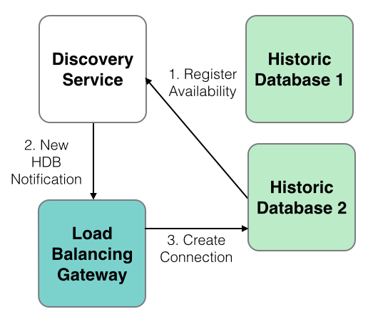

Processes
A set of processes is included. These processes build upon AquaQ TorQ, providing specific functionality. All the process scripts are contained in $KDBCODE/processes. All processes should have an entry in $KDBCONFIG/process.csv. All processes can have any type and name, except for discovery services which must have a process type of “discovery”. An example process.csv is:
aquaq$ cat config/process.csv
host,port,proctype,procname
aquaq,9998,rdb,rdb_europe_1
aquaq,9997,hdb,rdb_europe_1aquaq,9999,hdb,hdb1
aquaq,9996,discovery,discovery1
aquaq,9995,discovery,discovery2
aquaq,8000,gateway,gateway1
aquaq,5010,tickerplant,tickerplant1
aquaq,5011,rdb,rdb1
aquaq,5012,hdb,hdb1
aquaq,5013,hdb,hdb2
aquaq,9990,tickerlogreplay,tpreplay1
aquaq,20000,kill,killhdbs
aquaq,20001,monitor,monitor1
aquaq,20002,housekeeping,hk1
Discovery Service
Overview
Processes use the discovery service to register their own availability, find other processes (by process type) and subscribe to receive updates for new process availability (by process type). The discovery service does not manage connections- it simply returns tables of registered processes, irrespective of their current availability. It is up to each individual process to manage its own connections.
The discovery service uses the process.csv file to make connections to processes on start up. After start up it is up to each individual process to attempt connections and register with the discovery service. This is done automatically, depending on the configuration parameters. Multiple discovery services can be run in which case each process will try to register and retrieve process details from each discovery process it finds in its process.csv file. Discovery services do not replicate between themselves. A discovery process must have its process type listed as discovery.
To run the discovery service, use a start line such as:
aquaq $ q torq.q -load code/processes/discovery.q -p 9995
Modify the configuration as required.
Operation
-
Processes register with the discovery service.

-
Processes use the discovery service to locate other processes.

-
When new services register, any processes which have registered an interest in that process type are notified.

Available Processes
The list of available processes can be found in the .servers.SERVERS table.
q).servers.SERVERS
procname proctype hpup w hits startp lastp endp attributes
-------------------------------------------------------------------------------------
discovery1 discovery :aquaq:9995 0 2014.01.22D17:00:40.947470000 ()!()
discovery2 discovery :aquaq:9996 0 2014.01.22D17:00:40.947517000 ()!()
hdb2 hdb :aquaq:5013 0 2014.01.22D17:00:40.947602000 ()!()
killtick kill :aquaq:20000 0 2014.01.22D17:00:40.947602000 ()!()
tpreplay1 tickerlogreplay :aquaq:20002 0 2014.01.22D17:00:40.947602000 ()!()
tickerplant1 tickerplant :aquaq:5010 6 0 2014.01.22D17:00:40.967699000 2014.01.22D17:00:40.967698000 ()!()
monitor1 monitor :aquaq:20001 9 0 2014.01.22D17:00:40.971344000 2014.01.22D17:00:40.971344000 ()!()
rdb1 rdb :aquaq:5011 7 0 2014.01.22D17:06:13.032883000 2014.01.22D17:06:13.032883000 `date`tables!(,2014.01.22;`fxquotes`heartbeat`logmsg`quotes`trades)
hdb3 hdb :aquaq:5012 8 0 2014.01.22D17:06:18.647349000 2014.01.22D17:06:18.647349000 `date`tables!(2014.01.13 2014.01.14;`fxquotes`heartbeat`logmsg`quotes`trades)
gateway1 gateway :aquaq:5020 10 0 2014.01.22D17:06:32.152836000 2014.01.22D17:06:32.152836000 ()!()
Gateway
A synchronous and asynchronous gateway is provided. The gateway can be used for load balancing and/or to join the results of queries across heterogeneous servers (e.g. an RDB and HDB). Ideally the gateway should only be used with asynchronous calls. Synchronous calls cause the gateway to block so limits the gateway to serving one query at a time (although if querying across multiple backend servers the backend queries will be run in parallel). When using asynchronous calls the client can either block and wait for the result (deferred synchronous) or post a call back function which the gateway will call back to the client with. With both asynchronous and synchronous queries the backend servers to execute queries against are selected using process type. The gateway API can be seen by querying .api.p“.gw.*” within a gateway process.

Asynchronous Behaviour
Asynchronous queries allow much greater flexibility. They allow multiple queries to be serviced at once, prioritisation, and queries to be timed out. When an asynchronous query is received the following happens:
-
the query is placed in a queue;
-
the list of available servers is retrieved;
-
the queue is prioritised, so those queries with higher priority are serviced first;
-
queries are sent to back end servers as they become available. Once the backend server returns its result, it is given another query;
-
when all the partial results from the query are returned the results are aggregated and returned to the client. They are either returned directly, or wrapped in a callback and posted back asynchronously to the client.
The two main customisable features of the gateway are the selection of available servers (.gw.availableservers) and the queue prioritisation (.gw.getnextqueryid). With default configuration, the available servers are those servers which are not currently servicing a query from the gateway, and the queue priority is a simple FIFO queue. The available servers could be extended to handle process attributes, such as the available datasets or the location of the process, and the queue prioritisation could be modified to anything required e.g. based on the query itself, the username, host of the client etc.
An asynchronous query can be timed out using a timeout defined by the client. The gateway will periodically check if any client queries have not completed in the alotted time, and return a timeout error to the client. If the query is already running on any backend servers then they cannot be timed out other than by using the standard -T flag.
Synchronous Behaviour
When using synchronous queries the gateway can only handle one query at a time and cannot timeout queries other than with the standard -T flag. All synchronous queries will be immediately dispatched to the back end processes. They will be dispatched using an asyhcnronous call, allowing them to run in parallel rather than serially. When the results are received they are aggregated and returned to the client.
Process Discovery
The gateway uses the discovery service to locate processes to query across. The discovery service will notify the gateway when new processes become available and the gateway will automatically connect and start using them. The gateway can also use the static information in process.csv, but this limits the gateway to a predefined list of processes rather than allowing new services to come online as demand requires.
Error Handling
When synchronous calls are used, q errors are returned to clients as they are encountered. When using asynchronous calls there is no way to return actual errors and appropriately prefixed strings must be used instead. It is up to the client to check the type of the received result and if it is a string then whether it contains the error prefix. The error prefix can be changed, but the default is “error: ”. Errors will be returned when:
-
the client requests a query against a server type which the gateway does not currently have any active instances of (this error is returned immediately);
-
the query is timed out;
-
a back end server returns an error;
-
a back end server fails;
-
the join function fails.
If postback functions are used, the error string will be posted back within the postback function (i.e. it will be packed the same way as a valid result).
Client Calls
There are four main client calls. The .gw.sync* methods should only be invoked synchronously, and the .gw.async* methods should only be invoked asynchronously. Each of these are documented more extensively in the gateway api. Use .api.p“.gw.*” for more details.
| Function | Description |
|---|---|
| .gw.syncexec[query; servertypes] | Execute the specified query synchronously against the required list of servers. If more than one server, the results will be razed. |
| .gw.syncexecj[query; servertypes; joinfunction] | Execute the specified query against the required list of servers. Use the specified join function to aggregate the results. |
| .gw.asyncexec[query; servertypes] | Execute the specified query against the required list of servers. If more than one server, the results will be razed. The client must block and wait for the results. |
| .gw.asyncexecjpt[query; servertypes; joinfunction; postback; timeout] | Execute the specified query against the required list of servers. Use the specified join function to aggregate the results. If the postback function is not set, the client must block and wait for the results. If it is set, the result will be wrapped in the specified postback function and returned asynchronously to the client. The query will be timed out if the timeout value is exceeded. |
For the purposes of demonstration, assume that the queries must be run across an RDB and HDB process, and the gateway has one RDB and two HDB processes available to it.
q).gw.servers
handle| servertype inuse active querycount lastquery usage attributes
------| --------------------------------------------------------------------
7 | rdb 0 1 17 2014.01.07D17:05:03.113927000 0D00:00:52.149069000 `datacentre`country!`essex`uk
8 | hdb 0 1 17 2014.01.07D17:05:03.113927000 0D00:01:26.143564000 `datacentre`country!`essex`uk
9 | hdb 0 1 2 2014.01.07D16:47:33.615538000 0D00:00:08.019862000 `datacentre`country!`essex`uk
12 | rdb 0 1 2 2014.01.07D16:47:33.615538000 0D00:00:04.018349000 `datacentre`country!`essex`uk
Both the RDB and HDB processes have a function f and table t defined. f will run for 2 seconds longer on the HDB processes then it will the RDB.
q)f
{system"sleep ",string x+$[`hdb=.proc.proctype;2;0]; t}
q)t
a
----
5013
5014
5015
5016
5017
Run the gateway. The main parameter which should be set is the .servers.CONNECTIONS parameter, which dictates the process types the gateway queries across. Also, we need to explicitly allow sync calls. We can do this from the config or from the command line.
q torq.q -load code/processes/gateway.q -p 8000 -.gw.synccallsallowed 1 -.servers.CONNECTIONS hdb rdb
Start a client and connect to the gateway. Start with a sync query. The HDB query should take 4 seconds and the RDB query should take 2 seconds. If the queries run in parallel, the total query time should be 4 seconds.
q)h:hopen 8000
q)h(`.gw.syncexec;(`f;2);`hdb`rdb)
a
----
5014
5015
5016
5017
5018
5012
5013
5014
5015
5016
q)\t h(`.gw.syncexec;(`f;2);`hdb`rdb)
4009
If a query is done for a server type which is not registered, an error is returned:
q)\t h(`.gw.syncexec;(`f;2);`hdb`rdb`other)
`not all of the requested server types are available; missing other
Custom join functions can be specified:
q)h(`.gw.syncexecj;(`f;2);`hdb`rdb;{sum{select count i by a from x} each x})
a | x
----| -
5014| 2
5015| 2
5016| 2
5017| 1
5018| 1
5012| 1
5013| 1
Custom joins can fail with appropriate errors:
q)h(`.gw.syncexecj;(`f;2);`hdb`rdb;{sum{select count i by b from x} each x})
`failed to apply supplied join function to results: b
Asynchronous queries must be sent in async and blocked:
q)(neg h)(`.gw.asyncexec;(`f;2);`hdb`rdb); r:h(::)
/- This white space is from pressing return
/- the client is blocked and unresponsive
q)q)q)
q)
q)r
a
----
5014
5015
5016
5017
5018
5012
5013
5014
5015
5016
q)
We can send multiple async queries at once. Given the gateway has two RDBs and two HDBs avaialble to it, it should be possible to service two of these queries at the same time.
q)h:hopen each 8000 8000
q)\t (neg h)@\:(`.gw.asyncexec;(`f;2);`hdb`rdb); (neg h)@\:(::); r:h@\:(::)
4012
q)r
+(,`a)!,5014 5015 5016 5017 5018 5012 5013 5014 5015 5016
+(,`a)!,5013 5014 5015 5016 5017 9999 10000 10001 10002 10003
Alternatively async queries can specify a postback so the client does not have to block and wait for the result. The postback function must take two parameters- the first is the function that was sent up, the second is the results. The postback can either be a lambda, or the name of a function.
q)h:hopen 8000
q)handleresults:{-1(string .z.z)," got results"; -3!x; show y}
q)(neg h)(`.gw.asyncexecjpt;(`f;2);`hdb`rdb;raze;handleresults;0Wn)
q)
q) /- These q prompts are from pressing enter
q) /- The q client is not blocked, unlike the previous example
q)
q)2014.01.07T16:53:42.481 got results
a
----
5014
5015
5016
5017
5018
5012
5013
5014
5015
5016
/- Can also use a named function rather than a lambda
q)(neg h)(`.gw.asyncexecjpt;(`f;2);`hdb`rdb;raze;`handleresults;0Wn)
q)
q)
q)2014.01.07T16:55:12.235 got results
a
----
5014
5015
5016
5017
5018
5012
5013
5014
5015
5016
Asynchronous queries can also be timed out. This query will run for 22 seconds, but should be timed out after 5 seconds. There is a tolerance of +5 seconds on the timeout value, as that is how often the query list is checked. This can be reduced as required.
q)(neg h)(`.gw.asyncexecjpt;(`f;20);`hdb`rdb;raze;();0D00:00:05); r:h(::)
q)q)q)r
"error: query has exceeded specified timeout value"
q)\t (neg h)(`.gw.asyncexecjpt;(`f;20);`hdb`rdb;raze;();0D00:00:05); r:h(::)
6550
Non kdb+ Clients
All the examples in the previous section are from clients written in q. However it should be possible to do most of the above from non kdb+ clients. The officially supported APIs for Java, C# and C allow the asynchronous methods above. For example, we can modify the try block in the main function of the Java Grid Viewer:
import java.awt.BorderLayout;
import java.awt.Color;
import java.io.IOException;
import java.lang.reflect.Array;
import java.util.logging.Level;
import java.util.logging.Logger;
import javax.swing.JFrame;
import javax.swing.JScrollPane;
import javax.swing.JTable;
import javax.swing.table.AbstractTableModel;
import kx.c;
public class Main {
public static class KxTableModel extends AbstractTableModel {
private c.Flip flip;
public void setFlip(c.Flip data) {
this.flip = data;
}
public int getRowCount() {
return Array.getLength(flip.y[0]);
}
public int getColumnCount() {
return flip.y.length;
}
public Object getValueAt(int rowIndex, int columnIndex) {
return c.at(flip.y[columnIndex], rowIndex);
}
public String getColumnName(int columnIndex) {
return flip.x[columnIndex];
}
};
public static void main(String[] args) {
KxTableModel model = new KxTableModel();
c c = null;
try {
c = new c("localhost", 8000,"username:password");
// Create the query to send
String query=".gw.asyncexec[(`f;2);`hdb`rdb]";
// Send the query
c.ks(query);
// Block on the socket and wait for the result
model.setFlip((c.Flip) c.k());
} catch (Exception ex) {
Logger.getLogger(Main.class.getName()).log(Level.SEVERE, null, ex);
} finally {
if (c != null) {try{c.close();} catch (IOException ex) {}
}
}
JTable table = new JTable(model);
table.setGridColor(Color.BLACK);
String title = "kdb+ Example - "+model.getRowCount()+" Rows";
JFrame frame = new JFrame(title);
frame.setDefaultCloseOperation(JFrame.EXIT_ON_CLOSE);
frame.getContentPane().add(new JScrollPane(table), BorderLayout.CENTER);
frame.setSize(300, 300);
frame.setVisible(true);
}
}
Some of the unofficially supported APIs may only allow synchronous calls to be made.
Real Time Database (RDB)
The Real Time Database is a modified version of r.q found in kdb+tick. The modifications from the standard r.q include:
-
Tickerplant (data source) and HDB location derived from processes defined by the discovery service or from config file;
-
Automatic re-connection and resubscription to tickerplant;
-
List of tables to subscribe to supplied as configuration setting;
-
More pre-built flexibility in end-of-day;
-
More verbose end-of-day logging;
-
Reload multiple authenticated HDBs after end-of-day;
-
End-of-day save down manipulation code is shared between RDB, WDB and tickerplant log replay
See the top of the file for more information.
Write Database (WDB)
The Write Database or WDB is based on w.q. This process features a number of modifications and enhancements over w.q:
-
Provides the option to write down to a custom partition scheme, defined by parted columns in sort.csv, which removes the need for end of day sorting;
-
Greater configuration options; max rows on a per table basis, list subscription tables, upd function etc. See the top of the process file for the options;
-
Use of common code with the RDB and Tickerplant Log Replay process to manipulate tables before save, sort and apply attributes;
-
Checks whether to persist data to disk on a timer rather than on each tick;
-
Informs other RDB, HDB and GW processes that end of day save and sort has completed;
-
More log information supplied.
The WDB process can broken down into two main functions:
-
Periodically saving data to disk and
-
Sorting data at end of day
The WDB process provides flexibility so it can be set-up as a stand-alone process that will both save and sort data or two separate processes (one that saves the data and another that will sort the data on disk). This allows greater flexibility around the end of day event as sorting data can be time consuming. It is also helps when implementing seemless rollovers (i.e. no outage window at end-of-day).
The behaviour of the WDB process is controlled by the .wdb.mode
parameter. This should be set to one of following three values:
-
saveandsort - the process will subscribe for data, periodically write data to disk and at EOD it will flush remaining data to disk before sorting it and informing GWs, RDBs and HDBs etc.
-
save - the process will subscribe for data, periodically write data to disk and at EOD it will flush remaining data to disk. It will then inform its respective sort mode process to sort the data
-
sort - the process will wait to get a trigger from its respective save mode process. When this is triggered it will sort the data on disk, apply attributes and the trigger a reload on the RDB, HDB and GW processes
When running a system with separate save and sort process, the sort process should be configured in the processes.csv file with a proctype of sort. The save process will check for processes with a proctype of sort when it attempts to trigger the end of day sort of the data.
The wdb process provides two methods for persisting data to disk and sorting at the end of the day.
-
default - Data is persisted into a partition defined by the [partitiontype] variable, similar to the hdb partition scheme. The general scheme is of the form [wdbdir]/[partitiontype]/[table]/. And a typical partition directory would be similar to wdb/database/2015.11.26/trades/. At the end of the day, before being moved to the hdb, the data is sorted according to parameters defined in sort.csv. For each table, sort.csv will specify the columns to sort (using xasc) and apply attributes to.
-
partbyattr - Data is persisted to a custom partition scheme, derived from parameters in the sort.csv file. The write down scheme is taken from sort.csv, to reflect the effect of using xasc at the end of day. For each table, the columns defined in sort.csv, with the parted attribute, are used to create custom partitions in the wdb. Multiple columns can be defined with the parted attribute and distinct combinations of each are generated for custom partitions. The general partition scheme is of the form [wdbdir]/[partitiontype]/[table]/[parted column(s)]/. And a typical partition directory would be similar to wdb/database/2015.11.26/trade/MSFT_N. In the above example, the data is parted by sym and source, and so a unique partition directory MSFT_N is created in the wdb directory.
At the end of the day, data is upserted into the hdb without the need for sorting. The number of rows that are joined at once is limited by the mergenumrows and mergenumtab parameters.
The optional partbyattr method may provide a significant saving in time at the end of day, allowing the hdb to be accessed sooner. For large data sets with a low cardinality (ie. small number of distinct elements) the optional method may provide a significant time saving, upwards of 50%. The optional method should also reduce the memory usage at the end of day event, as joining data is generally less memory intensive than sorting.
Tickerplant Log Replay
The Tickerplant Log Replay script is for replaying tickerplant logs. This is useful for:
-
handling end of day save down failures;
-
handling large volumes of data (larger than can fit into RAM).
The process takes as the main input either an individual log file to replay, or a directory containing a set of log files. Amongst other functionality, the process can:
-
replay specific message ranges;
-
replay in manageable message chunks;
-
recover as many messages as possible from a log file rather than just stopping at the first bad message;
-
ignore specific tables;
-
modify the tables before or after they are saved;
-
apply sorting and parting after all the data is written out.
The process must have some variables set (the tickerplant log file or directory, the schema file, and the on-disk database directory to write to) or it will fail on startup. These can either be set in the config file, or overridden from the command line in the usual way. An example start line would be:
q torq.q -debug -load code/processes/tickerlogreplay.q -p 9990 -.replay.tplogfile ../test/tplogs/marketdata2013.12.17 -.replay.schemafile ../test/marketdata.q -.replay.hdbdir ../test/hdb1
The tickerplant log replay script has extended usage information which can be accessed with -.replay.usage.
q torq.q -debug -load code/processes/tickerlogreplay.q -p 9990 -.replay.usage
Housekeeping
The housekeeping process is used to undertake periodic system housekeeping and maintenance, such as compressing or removing files which are no longer required. The process will run the housekeeping jobs periodically on a timer. Amongst other functionality the process:
-
Allows for removing and zipping of directory files;
-
Provides an inbuilt search utility and selectively searches using a ‘find’ and ‘exclude’ string, and an ‘older than’ parameter;
-
Reads all tasks from a single CSV;
-
Runs on a user defined timer;
-
Can be run immediately from command line or within the process;
-
Can be easily extended to include new user defined housekeeping tasks.
The process has two main parameters that should be set prior to use; runtimes and inputcsv.‘Runtimes’ sets the timer to run housekeeping at the set time(s), and ‘Inputcsv’ provides the location of the housekeeping csv file. These can either be set in the config file, or overridden via the command line. If these are not set, then default parameters are used; 12.00 and ‘KDBCONFIG/housekeeping.csv’ respectively. The process is designed to run from a single csv file with five headings:
-
Function details the action that you wish to be carried out on the files, initially, this can be rm (remove) and zip (zipping);
-
Path specifies the directory that the files are in;
-
Match provides the search string to the find function, files returned will have names that match this string;
-
Exclude provides a second string to the find function, and these files are excluded from the match list;
-
Age is the ‘older than’ parameter, and the function will only be carried out on files older than the age given (in days).
An example csv file would be:
function,path,match,exclude,age
zip,./logs/,*.log,*tick*,2
rm,./logs/,*.log*,*tick*,4
zip,./logs/,*tick*,,1
rm,./logs/,*tick*,,3
function path match exclude age
----------------------------------------
zip "./logs/" "*.log" "*tick*" 2
rm "./logs/" "*.log*" "*tick*" 4
zip "./logs/" "*tick*" "" 1
rm "./logs/" "*tick*" "" 3
The process reads in the csv file, and passes it line by line to a ‘find’ function; providing a dictionary of values that can be used to locate the files required. The find function takes advantage of system commands to search for the files according to the specifications in the dictionary. A search is performed for both the match string and the exclude string, and cross referenced to produce a list of files that match the parameters given. The files are then each passed to a further set of system commands to perform the task of either zipping or removing. Note that an incomplete csv or non-existant path will throw an error.
The remove and zipping functions form only basic implimentations of the housekeeping process; it is designed to be exended to include more actions than those provided. Any user function defined in the housekeeping code can be employed in the same fashion by providing the name of the function,search string and age of files to the csv.
As well as being scheduled on a timer, the process can also be run immediately. Adding ‘-hk.runnow 1’ to the command line when starting the process will force immediate running of the actions in the housekeeping csv. Likewise, setting runnow to 1b in the config file will immediately run the cleaning process. Both methods will cause the process to exit upon completion. Calling hkrun[] from within the q process will also run the csv instructions immediately. This will not affect any timer scheduling and the process will remain open upon completion.
Housekeeping works both on windows and unix based systems. Since the process utilizes inbuilt system commands to perform maintenances, a unix/windows switch detects the operating system of the host and applies either unix or widows functions appropriately. Extensions need only be made in the namespace of the hosting operating system (i.e. if you are using a unix system, and wish to add a new function, you do not need to add the function to the windows namespace to). Usage information can be accessed using the ‘-hkusage’ flag:
q torq.q -load code/processes/housekeeping.q -p 9999 -proctype housekeeping -procname hk1 -debug -hkusage
File Alerter
The file alerter process is a long-running process which periodically scans a set of directories for user-specified files. If a matching file is found it will then carry out a user-defined function on it. The files to search for and the functions to run are read in from a csv file. Additionally, the file alerter process can:
-
run more than one function on the specified file.
-
optionally move the file to a new directory after running the function.
-
store a table of files that have already been processed.
-
run the function only on new files or run it every time the file is modified.
-
ignore any matching files already on the system when the process starts and only run a function if a new file is added or a file is modified.
The file alerter process has four parameters which should be set prior to use. These parameters can either be set in the config file or overridden on the command-line. If they are not set, the default parameters will be used. The parameters are as follows.
inputcsv - The name and location of the csv file which defines the behaviour of the process. The default is KDBCONFIG/filealerter.csv.
polltime - How often the process will scan for matching files. The default is 0D:00:01, i.e., every minute.
alreadyprocessed - The name and location of the already-processed table. The default is KDBCONFIG/filealerterprocessed. This table will be created automatically the first time the process is ran.
skipallonstart - If this is set to 1, it will ignore all files already on the system; if it is set to 0, it will not. The default value is 0.
The files to find and the functions to run are read in from a csv file created by the user. This file has five columns, which are detailed below.
path - This is the path to the directory that will be scanned for the file.
match - This is a search string matching the name of the file to be found. Wildcards can be used in this search, for example, “file*” will find all files starting with “fil”.
function - This is the name of the function to be run on the file. This function must be defined in the script KDBCODE/processes/filealerter.q. If the function is not defined or fails to run, the process will throw an error and ignore that file from then on.
newonly - This is a boolean value. If it is set to 1, it will only run the function on the file if it has been newly created. If it is set to 0, then it will run the function every time the file is modified.
movetodirectory - This is the path of the directory you would like to move the file to after it has been processed. If this value is left blank, the file will not be moved.
It is possible to run two separate functions on the same file by adding them as separate lines in the csv file. If the file is to be moved after it is processed, the file alerter will run both functions on the file and then attempt to move it. A typical csv file to configure the file alerter would look like:
path,match,function,newonly,movetodirectory
/path/to/dirA,fileA.*,copy,0,/path/to/newDir
/path/to/dirB,fileB.txt,email,1,
/path/to/dirA,fileA.*,delete,0,/path/to/newDir
path match function newonly movetodirectory
---------------------------------------------------
"/path/to/dirA" "fileA.*" copy 0 "/path/to/newDir"
"/path/to/dirB" "fileB.txt" email 1 ""
"/path/to/dirA" "fileA.*" delete 0 "/path/to/newDir"
The file alerter process reads in each line of the csv file and searches files matching the search string specified in that line. Note that there may be more than one file found if a wildcard is used in the search string. If it finds any files, it will check that they are not in the already processed table. If newonly is set to 1, it only checks if the filename is already in the table. If newonly is set to 0, it checks against the filename, filesize and a md5 hash of the file. The md5 hash and the filesize are used to determine if the file has been modified since it was processed last. If the found files have not been processed already, it then attempts to run the specified function to these files.
After the process has run through each line of the csv, it generates a table of all files that were processed on that run. These files are appended to the already processed table which is then saved to disk. The file alerter will attempt to move the files to the ‘movetodirectory’, if specified. If the file has already been moved during the process (for example, if the function to run on it was ‘delete’), the file alerter will not attempt to move it.
The file alerter is designed to be extended by the user. Customised functions should be defined within the filealerter.q script. They should be diadic functions, i.e., they take two parameters: the path and the filename. As an example, a simple function to make a copy of a file in another directory could be:
copy:{[path;file] system "cp ", path,"/", file, " /path/to/newDir"}
Although the process is designed to run at regular intervals throughout the day, it can be called manually by invoking the FArun[] command from within the q session. Similarly, if new lines are added to the csv file, then it can be re-loaded by calling the loadcsv[] command from the q session.
Each stage of the process, along with any errors which may occur, are appropriately logged in the usual manner.
The file alerter process is designed to work on both Windows and Unix based systems. Since many of the functions defined will use inbuilt system command they will be need to written to suit the operating system in use. It should also be noted that Windows does not have an inbuilt md5 hashing function so the file alerter will only detect different versions of files if the filename or filesize changes.
Reporter
Overview
The reporter process is used to run periodic reports on specific processes. A report is the result of a query that is run on a process at a specific time. The result of the query is then handled by one of the inbuilt result handlers, with the ability to add custom result handlers.

Features:
-
Easily create a report for information that you want;
-
Fully customizable scheduling such as start time, end time and days of the week;
-
Run reports repeatedly with a custom period between them;
-
Asynchronous querying with custom timeout intervals;
-
Inbuilt result handlers allow reports to be written to file or published;
-
Custom result handlers can be defined;
-
Logs each step of the report process;
-
Fully integrated with the TorQ gateway to allow reports to be run across backend processes.
The reporter process has three parameters that are read in on initialisation from the reporter.q file found in the $KDBCONFIG/settings directory. These settings are the string filepath of the input csv file, a boolean to output log messages and timestamp for flushing the query log table.
To run the reporter process:
q torq.q -load code/processes/reporter.q -p 20004
Once the reporter process has been initiated, the reports will be scheduled and no further input is required from the user.
Report Configuration
By default, the process takes its inputs from a file called reporter.csv which is found in the $KDBCONFIG directory. This allows the user complete control over the configuration of the reports. As the queries are evaluated on the target process, local variables can be referenced or foreign functions can be run. Table [table:reportertable] shows the meaning of the csv schema.
| Column Header | Description and Example |
|---|---|
| name | Report name e.g. Usage |
| query | Query to be evaluated on that process. It can be a string query or function |
| resulthandler | Result handlers are run on the returned result. Custom result handlers can be added. The result handler must be a monadic function with the result data being passed in e.g. writetofile[“./output”;“usage”] |
| gateway | If non null the reporter will query processes route the query to the proctype specified in this field. The values in the proctype field will be the process types on which the gateway runs the backend query. e.g. `gateway |
| joinfunction | Used to join the results when a gateway query is being used. The choice of joinfunction must take into account the result that will be received. The function must be monadic and the parameter will be the list of results returned from the backend processes e.g. raze |
| proctype | The type of process that the report will be run on. If the gateway field is not empty this may be a list of process types, otherwise the reporter will throw an error on startup. e.g. `rdb |
| procname | The name of a specific process to run the report on. If left null, the reporter process will select a random process with the specified proctype. If the gateway field is not null, this field specifies the specific gateway process name to run the query against e.g. `hdb1 |
| start | Time on that day to start at e.g. 12:00 |
| end | Time on that day that the report will stop at e.g. 23:00 |
| period | The period between each report query e.g. 00:00:10 |
| timeoutinterval | The amount of time the reporter waits before timing out a report e.g. 00:00:30 |
| daysofweek | Numeric value required for the day of the week. Where 0 is Saturday and 2 is Monday |
When running a report on a gateway, the gateway field must be set to the proctype of the gateway that will be queried. It will then run the report on the processes which are listed in the proctype field and join the results by using the function specified in the joinfunction field. If there is no join function then the reporter process will not start. Multiple entries in the proctype field must be separated by a space and are only allowed when the gateway field is not empty. If gateway field is empty and there are multiple entries in the proctype field then the reporter process will not load.
Listing [code:csvschema] shows an example of the schema needed in the input csv file.
name|query|resulthandler|gateway|joinfunction|proctype|procname|start|end|period|timeoutinterval|daysofweek
usage|10#.usage.usage|writetofiletype["./output/";"usage";"csv"]|||rdb||00:01|23:50|00:01|00:00:01|0 1 2 3 4 5 6
memory|.Q.w[]|writetofile["./output/";"memory.csv"]|||rdb|rdb1|00:05|18:00|00:01|00:00:08|0 1 2 3 4 5 6
usage_gateway|10#.usage.usage||gateway|raze|rdb hdb||00:02|22:00|00:01|00:00:10|0 1 2 3 4 5 6
Result Handlers
There are several default result handlers which are listed below. Custom result handlers can be defined as required. The result handler will be invoked with a single parameter (the result of the query).
writetofiletype - Accepts 3 parameters: path, filename, filetype and
data. When writing to file it uses a date time suffix so the resultant
filename will be usage_rdb_2014_01_02_15_00_12.txt e.g.
writetofiletype["./output/";"usage";"csv"]
splaytable - This accepts 3 parameters: path, file and data. This splays the result to a directory. The result must be a table in order to use this function e.g.
splaytable["./output/";"usage"]
emailalert - This accepts 3 parameters: period, recipient list and data. The period dictates the throttle i.e. emails will be sent at most every period. The result of the report must be a table with a single column called messages which contains the character list of the email message. This is used with the monitoring checks to raise alerts, but can be used with other functions.
emailalert[0D00:30;("test@aquaq.co.uk";"test1@aquaq.co.uk")]
emailreport - This accepts 3 parameters: temporary path, recipient list, file name, file type and data. The data is written out as the file type (e.g. csv, xml, txt, xls, json) with the given file name to the temporary path. It is then emailed to the recipient list, and the temporary file removed.
emailreport["./tempdir/"; ("test@aquaq.co.uk";"test1@aquaq.co.uk"); "EndOfDayReport"; "csv"]
publishresult - Accepts 1 parameter and that is the data. This is discussed later in the subsection subresults. Custom result handlers can be added to $KDBCODE/processes/reporter.q . It is important to note that the result handler is referencing local functions as it is executed in the reporter process and not the target process. When the query has been successful the result handler will be passed a dictionary with the following keys: queryid, time, name, procname, proctype and result.
Report Process Tracking
Each step of the query is logged by the reporter process. Each query is given a unique id and regular system messages are given the id 0. The stage column specifies what stage the query is in and these are shown in table [table:stagetable]. An appropriate log message is also shown so any problems can easily be diagnosed. The in memory table is flushed every interval depending on the value of the flushqueryloginterval variable in the reporter.q file found in the $KDBCONFIG/settings directory.
| Stage symbol | Explanation |
|---|---|
| R | The query is currently running |
| E | An error has occurred during the query |
| C | The query has been completed with no errors |
| T | The query has exceeded the timeout interval |
| S | System message e.g. “Reporter Process Initialised” |
time | queryid stage message
-----------------------------| ------------------------------------------------------------------------
2014.10.20D22:20:06.597035000| 37 R "Received result"
2014.10.20D22:20:06.600692000| 37 R "Running resulthandler"
2014.10.20D22:20:06.604455000| 37 C "Finished report"
2014.10.20D22:30:00.984572000| 38 R "Running report: rdbtablecount against proctype: rdb on handle: 7i"
2014.10.20D22:30:00.991862000| 38 R "Received result"
2014.10.20D22:30:00.995527000| 38 R "Running resulthandler"
2014.10.20D22:30:00.999236000| 38 C "Finished report"
2014.10.20D22:30:06.784419000| 39 R "Running report: rdbtablecount against proctype: rdb on handle: 7i"
2014.10.20D22:30:06.796431000| 39 R "Received result"
Subscribing for Results
To publish the results of the report, the reporter process uses the pub sub functionality of TorQ. This is done by using the using the inbuilt result handler called publishresult. In order to subscribe to this feed, connect to the reporter process and send the function shown below over the handle. To subscribe to all reports use a backtick as the second parameter and to subscribe to a specific reports results include the reporter name as a symbol.
/- define a upd function
upd:insert
/- handle to reporter process
h: hopen 20004
/- Subscribe to all results that use the publishresult handler
h(`.ps.subscribe;`reporterprocessresults;`)
/- Subscribe to a specific report called testreport
h(`.ps.subscribe;`reporterprocessresults;`testreport)
Example reports
The following are examples of reports that could be used in the reporter
process. The rdbtablecount report will run hourly and return the count
of all the tables in a rdb process. The memoryusage report will run
every 10 minutes against the gateway for multiple processes and will
return the .Q.w[] information. Both of these reports run between
9:30am to 4:00pm during the weekdays. The report onetimequery is an
example of a query that is run one time, in order to run a query once,
the period must be the same as the difference between the start and end
time.
name|query|resulthandler|gateway|joinfunction|proctype|procname|start|end|period|timeoutinterval|daysofweek
rdbtablecount|ts!count each value each ts:tables[]|{show x`result}|||rdb|rdb1|09:30|16:00|01:00|00:00:10|2 3 4 5 6
memoryusage|.Q.w[]|writetofile["./output/";"memory.csv"]|gateway1|{enlist raze x}|rdb hdb||09:30|16:00|00:10|00:00:10|2 3 4 5 6
onetimequery|10#.usage.usage|writetofile["./output/";"onetime.csv"]|||rdb||10:00|10:01|00:01|00:00:10|2 3 4 5 6
Monitor
The Monitor process is a simple process to monitor the health of the other processes in the system. It connects to each process that it finds (by default using the discovery service, though can use the static file as well) and subscribes to both heartbeats and log messages. It maintains a keyed table of heartbeats, and a table of all log messages received.
Run it with:
aquaq $ q torq.q -load code/processes/monitor.q -p 20001
It is probably advisable to run the monitor process with the -trap flag, as there may be some start up errors if the processes it is connecting to do not have the necessary heartbeating or publish/subscribe code loaded.
aquaq $ q torq.q -load code/processes/monitor.q -p 20001 -trap
The current heartbeat statuses are tracked in .hb.hb, and the log messages in logmsg
q)show .hb.hb
sym procname | time counter warning error
----------------------| ---------------------------------------------------
discovery discovery2 | 2014.01.07D13:24:31.848257000 893 0 0
hdb hdb1 | 2014.01.07D13:24:31.866459000 955 0 0
rdb rdb_europe_1| 2014.01.07D13:23:31.507203000 901 1 0
rdb rdb1 | 2014.01.07D13:24:31.848259000 34 0 0
q)show select from logmsg where loglevel=`ERR
time sym host loglevel id message
-------------------------------------------------------------------------------------
2014.01.07D12:25:17.457535000 hdb1 aquaq ERR reload "failed to reload database"
2014.01.07D13:29:28.784333000 rdb1 aquaq ERR eodsave "failed to save tables : trade, quote"
HTML5 front end
A HTML5 front end has been built to display important process information that is sent from the monitor process. It uses HTML5, WebSockets and JavaScript on the front end and interacts with the monitor process in the kdb+ side. The features of the front end include:
-
Heartbeat table with processes that have warnings highlighted in orange and errors in red
-
Log message table displaying the last 30 errors
-
Log message error chart that is by default displayed in 5 minute bins
-
Chart’s bin value can be changed on the fly
-
Responsive design so works on all main devices i.e. phones, tablets and desktop
It is accessible by going to the url http://HOST:PORT/.non?monitorui
Compression
The compression process is a thin wrapper around the compression utility library. It allows periodic compression of whole or parts of databases (e.g. data is written out uncompressed and then compressed after a certain period of time). It uses four variables defined in KDBCONFIG/settings/compression.q which specify
-
the compression configuration file to use
-
the database directory to compress
-
the maximum age of data to attempt to compress
-
whether the process should exit upon completion
The process is run like other TorQ processes:
q torq.q -load code/processes/compression.q -p 20005
Modify the settings file or override variables from the command line as appropriate.
Kill
The kill process is used to connect to and terminate currently running processes. It kills the process by sending the exit command therefore the kill process must have appropriate permissions to send the command, and it must be able to create a connection (i.e. it will not be able to kill a blocked process in the same way that the unix command kill -9 would). By default, the kill process will connect to the discovery service(s), and kill the processes of the specified types. The kill process can be modified to not use the discovery service and instead use the process.csv file via the configuration in the standard way.
If run without any command line parameters, kill.q will try to kill each process it finds with type defined by its .servers.CONNECTIONS variable.
q torq.q -load code/processes/kill.q -p 20000
.servers.CONNECTIONS can optionally be overridden from the command line (as can any other process variable):
q torq.q -load code/processes/kill.q -p 20000 -.servers.CONNECTIONS rdb tickerplant
The kill process can also be used to kill only specific named processes within the process types:
q torq.q -load code/processes/kill.q -p 20000 -killnames hdb1 hdb2
Chained Tickerplant
In tick+ architecture the main tickerplant is the most important component, as it is relied upon by all the real time subscribers. When the tickerplant goes down data will be lost, compare this to an rdb which can be recovered after it fails. The chained tickerplant process is an additional tickerplant that is a real time subscriber to the main tickerplant but replicates its behaviour. It will have its own real time subscribers and can be recovered when it fails. This is the recommended approach when users want to perform their own custom real time analysis.
The chained tickerplant can:
-
subscribe to specific tables and syms
-
batch publish at an interval or publish tick by tick
-
create a tickerplant log that its real time subscribers can replay
-
replay the source tickerplant log
To launch the chained tickerplant
q torq.q -load code/processes/chainedtp.q -p 12009
Chained tickerplant settings are found in config/settings/chainedtp.q
and are under the .ctp namespace.
| Setting | Explanation | Default |
|---|---|---|
| tickerplantname | list of tickerplant names to try and make a connection to | `tickerplant1 |
| pubinterval | publish batch updates at this interval. If the value is 0D00:00:00 then it will publish tick by tick | 0D00:00:00 |
| tpconnsleep | number of seconds between attempts to connect to the source tickerplant | 10 |
| createlogfile | create a log file | 0b |
| logdir | directory containing chained tickerplant logs | `:hdb |
| subscribeto | subscribe to these tables only (null for all) | ` |
| subscribesyms | subscribe to these syms only (null for all) | ` |
| replay | replay the tickerplant log file | 0b |
| schema | retrieve schema from tickerplant | 1b |
| clearlogonsubscription | clear log on subscription, only called if createlogfile is also enabled | 0b |
Integration with kdb+tick
AquaQ TorQ can be fully integrated with kdb+tick. For further details, use one of the AquaQ TorQ Starter packs to set up a production kdb+ data capture system.